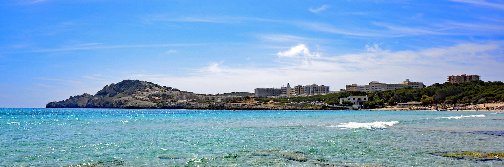
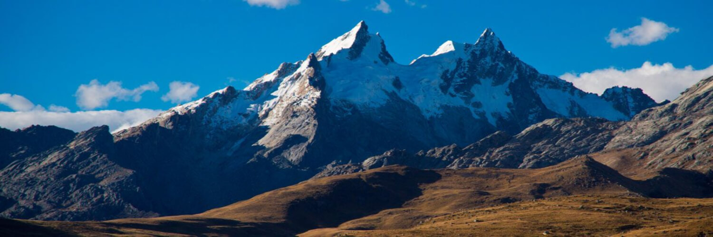

Para la mayoría visitar Andorra solía ser sinónimo de una escapada rápida. Aquel típico turismo de compras ha ido perdiendo fuerza y muchos viajeros ya sólo vuelven para esquiar o relajarse en Caldea.
15/05/2017

El Camino de Santiago tiene desde hoy la primera ruta mediterránea de la Península. Transcurre por el trazado de la antigua Vía Augusta
25/04/2017